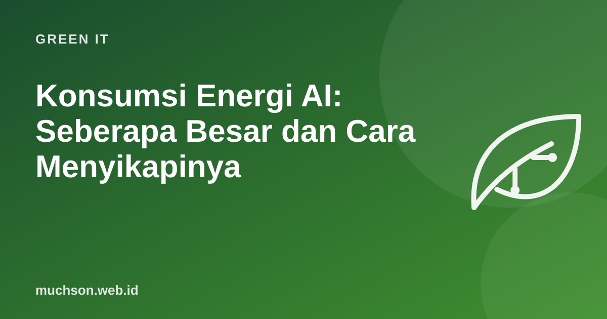

Konsumsi Energi AI: Seberapa Besar dan Cara Menyikapinya
Setiap kali AI booming, muncul dua cerita yang bertolak belakang: "AI akan menghabiskan listrik dunia" dan "satu prompt hanya seperti menyalakan lampu sebentar". Keduanya ada benarnya, tergantung skala yang dilihat. Data dari IEA dan laporan teknis penyedia AI membantu kita melihat gambaran yang lebih jernih.

Gambaran besar: pusat data dunia
Laporan IEA "Energy and AI" (2025) memperkirakan pusat data memakai sekitar 415 TWh listrik pada 2024, atau sekitar 1,5% konsumsi listrik dunia, dengan pertumbuhan sekitar 12% per tahun sejak 2017. Dalam skenario dasar IEA, angka ini lebih dari dua kali lipat menjadi sekitar 945 TWh pada 2030, dengan AI sebagai pendorong utama.
Secara global 1,5% terdengar kecil, tetapi konsumsi ini terkonsentrasi di lokasi tertentu. Di beberapa daerah, pusat data baru menekan jaringan listrik lokal dan kebutuhan air pendingin.
Skala kecil: satu prompt
Google pada Agustus 2025 menerbitkan metodologi pengukuran untuk layanan Gemini: prompt teks median di aplikasi Gemini (Mei 2025) diperkirakan memakai sekitar 0,24 Wh energi, menghasilkan sekitar 0,03 g CO₂e, dan memakai sekitar 0,26 mL air. Google mencatat angka ini belum diverifikasi pihak independen dan tidak mewakili semua jenis prompt.
Mengapa angkanya berbeda-beda
Memakai AI dengan lebih hemat
- Pilih model sesuai tugas. Tugas sederhana tidak butuh model terbesar atau mode penalaran panjang.
- Tulis prompt yang jelas agar tidak perlu bolak-balik berkali-kali.
- Untuk aplikasi: cache jawaban yang berulang, batasi panjang output, dan gunakan batch untuk pekerjaan tidak mendesak.
- Jangan otomatiskan yang tidak perlu: agen yang memanggil model ribuan kali per jam untuk tugas tidak penting tetap memakan energi.
- Pertimbangkan manfaatnya: AI yang menghemat perjalanan, kertas, atau pekerjaan berulang bisa memberi efek bersih positif.
Banyak angka viral tentang "AI menghabiskan air sebotol per email" berasal dari asumsi lama atau perhitungan kasar. Periksa sumber, tahun, dan batas pengukurannya sebelum membagikan.
Tanya jawab
Apakah memakai chatbot AI buruk bagi lingkungan?
Apakah perusahaan AI memakai energi terbarukan?
Bagaimana dengan air?
Sumber dan bacaan lanjut
- IEA (2025): Energy and AI, Executive Summary
- Google Cloud Blog (2025): Measuring the environmental impact of AI inference
- Google (2025): Measuring the environmental impact of delivering AI at Google Scale (arXiv)